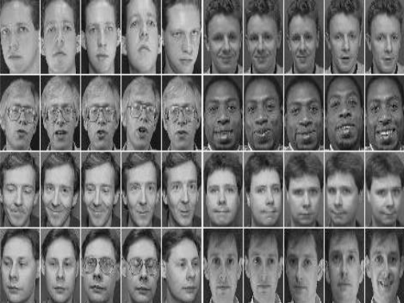
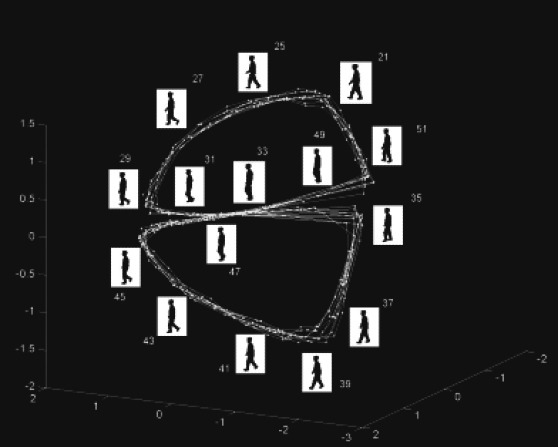

The first application of NLDR methods was the visualization of large image sets and the inherent classification problem.
Already in the original papers on LLE and IsoMap, the main examples were the low-dimensional embeddings of handwritten digits or rendered faces with different inclination and exposition.
In videos, frame classification was used to produce summaries or to compress data, employing the distances in the feature space instead of the frame number as significant parameter.
For example, LLE and IsoMap were succesfully applied to ORL and UMIST databases of faces (faces with different angles and expressions) as training methods in face recognition.
One example of succesful application of NLDR algorithms is object tracking.
The basic approach is supervised learning, where latent variables are learned through dimensionality reduction and these latent variables are mapped to labeled (e.g. joint location, silhouettes, contours, ...) training images.
For new images, the latent variables are learned and the label (tracking output) is estimated.
This can apply to track objects in presence of large rotations and occlusions, or to recognize activities from silhouettes, reconstructing the 3d pose from the contour image.
We consider the silhouettes of people walking, from different camera angles, obtaining different view manifolds, and apply NLDR to map them to latent variable spaces, to a more meaningful representation of such activity manifolds.
Here part of the problem is to keep track of the parametrization map and its inverse.
The approach is based on learning, in order, three components.
The typical scenario in medical image acquisition is that of many image sets where the overall motion is periodic, there are only a small number of degrees of freedom, each cause of image change can lead to a complex image transformation (typically non rigid) and the latent space is close to uniformly sampled.
Parametrizing images via a NLDR algorithm and using the learned parameters to reorder images leads to minimal motion between neighboring images, simplifying the point correspondence problem and allowing pairwise deformations to be estimated and extended into global deformations models.
Text classification is based on the single words and not on their order.
Therefore, they are modeled as (possibly independent) draws from a fixed multinomial distribution.
The statistical manifold of the $n$-multinomial family is obtained from an embedding of the $n$-simplex into the unit sphere, which is an isometry for the Fisher metric.
Kernels are used to put weights on the Euclidean representation, in order to estabilish decision boundaries in our statistical manifold.
A particularly useful kernel here is the heat kernel on the statistical manifold.